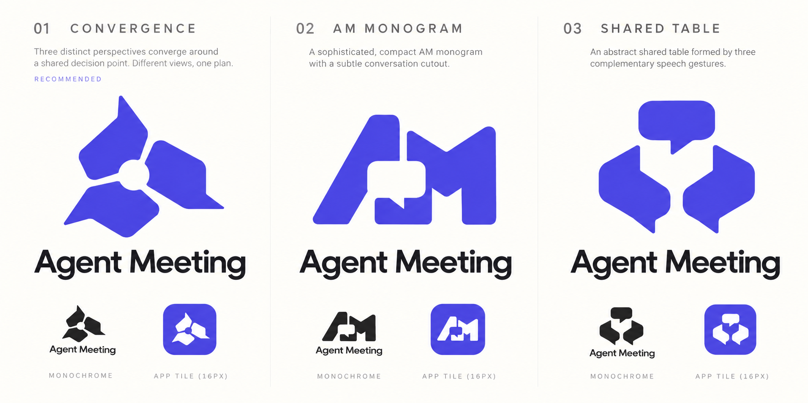

Indigo · #4F46E5
NHIỀU GÓC NHÌN. MỘT QUYẾT ĐỊNH CHUNG.
Những tiếng nói khác nhau,
cùng làm rõ bước tiếp theo.
Ba hình hội thoại giữ bản sắc riêng, hướng vào cùng một điểm quyết định. Phần âm ở giữa là không gian chung: kết quả được tạo ra qua trao đổi, không thuộc riêng một agent.
Indigo · #4F46E5

Một màu, cùng hình học

Không thêm viền hoặc hiệu ứng
MỘT LOGO, NHIỀU NGỮ CẢNH
Hình khối phẳng, không gradient, bóng đổ hay chi tiết phụ. Phiên bản app dùng nền indigo; phiên bản symbol dùng trực tiếp trên nền sáng hoặc tối.
 Agent Meeting64
Agent Meeting64DESKTOP LAUNCHER / NODE.JS 18+
node bin/cli.js install --dry-runSource hiện tại có lệnh cài cho Linux, macOS và Windows. Smoke test native đạt trên cả ba OS; mở GUI và hiển thị icon vẫn cần kiểm thủ công. Cài từ GitHub main: npx github:ttat288/agent-meeting#main install.
Menu ứng dụng + lệnh trong ~/.local/bin
~/Applications/Agent Meeting.app + lệnh local
Start Menu + bản app trong LocalAppData
Logo Convergence v1 đã được chọn làm nhận diện chính. Không tự đổi PATH, chạy nền lúc đăng nhập, cài model hay thay cấu hình client AI. App mở console và giao diện web local; cần giữ Node tại đường dẫn đã cài.
